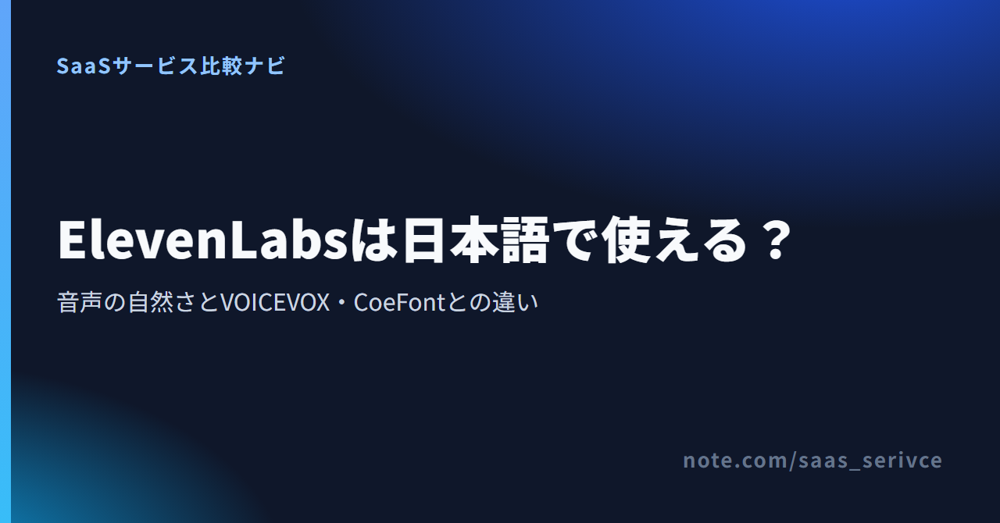

動画のナレーションや研修の読み上げをAIに任せるとき、候補に挙がるのがElevenLabs（イレブンラボ）です。ただ海外のサービスだけに、日本語の読み上げは自然か、支払いやサポートは日本語で済むか、VOICEVOXやCoeFontで足りるのではないかが気になります。
公式の仕様と公開レビューをもとに、日本語で使える範囲と2つのツールとの違いを整理しました。無料プランから試すかどうかの判断に使ってください。
ElevenLabsは日本語の音声を作れます。読み上げに使うモデルが日本語に対応しており、公式サイトも日本語で読めます。
注意したいのは、料金がUSD建てで請求され、日本語の問い合わせ窓口が明記されていない点です。
リンク先の日本語サイトから料金ページに進むと、プランごとのクレジットと商用ライセンスの有無を見比べられます。
日本語での利用はテキスト読み上げが中心で、音声クローンは有料プランから使えます。
テキスト読み上げは日本語に対応するモデルが3つあり、ブラウザとスマホアプリから利用できます。
録音から声を再現する音声クローンは2種類です。1〜2分の録音で作るInstant Voice CloningはStarter以上、最低30分（推奨2〜3時間）の録音で作るProfessional Voice CloningはCreator以上で使えます。後者は日本語を含む39言語に対応しています。
録音を文字にするSpeech to Text（Scribe v2）は90以上の言語に対応し、公式の精度区分では日本語が高精度のグループに入ります。動画を別の言語に吹き替えるダビング（Dubbing v2）も、日本語に対応しています。
日本語のナレーションなら、まずEleven v3で試すのが順当です。
対応言語はEleven v3が70以上、Multilingual v2が29、Flash v2.5が32です。v3は表現力を重視したモデルとして、2026年2月に正式リリースされました。
ある技術ブログは、日本語ではv3が安定し、Flash v2.5は速度を優先するぶん抑揚が粗くなる傾向があると書いています。
ElevenLabs公式の日本語読み上げページには、よく使われている音声が並んでいます。無料プランで試す声を絞り込む手がかりになります。
公開レビューの評価は分かれます。noteの解説記事は、v3で日本語の読み上げが格段に良くなったとしています。一方、自分で試した結果を載せた個人ブログは、英語は人の声とほぼ区別がつかないが、日本語はイントネーションに違和感が残る箇所があったと書いています。使ったモデルや時期の違いかもしれません。
どちらが当てはまるかは、自分の原稿を読ませてみないと分かりません。無料プランでは、声の好みより先に次の点を聞いてください。
ログイン後の画面（ダッシュボード）で作る場合、日本語の原稿はどのモデルでも1文字＝1クレジットです。v3を選んでも、読ませられる量は変わりません。
料金はUSD建ての税抜表示で、1ドル=157円換算（執筆時点の目安。為替で変動）ではStarterの月$6が約942円、Creatorの月$22が約3,454円です。個人のナレーションなら次の3つが候補です。
上位にはPro（月$99）、チーム向けのScaleとBusiness、個別見積もりのEnterpriseがあります。
Pro以上のプランのクレジット数や、年払いにした場合の月あたりの金額も、料金ページで確かめられます。
使う量に合わせたプランの選び方は、料金に絞った別のnoteで詳しく扱います。
収益化しているYouTube動画や、仕事で納品するナレーションのような使い方には、商用ライセンスが必要です。
料金ページの比較表には、プランごとに「含まれる分数」の目安も載っています。Freeは約10分、Starterは約30分、Creatorは約121分で、音声1分を約1,000文字として数えた値です。日本語の原稿は1文字＝1クレジットなので、必要なクレジットは原稿の字数からそのまま見積もれます。モデルによる料金の差が出るのはAPIで従量課金する場合だけで、1,000文字あたりv3とMultilingual v2が$0.10、FlashとTurboが$0.05です。
契約前の情報は日本語で集められ、解約や請求書の取り出しも画面で完結します。会社で導入するなら、カード払いと請求書の扱いが経理で通るかが分かれ目です。
日本語で読めるのは、公式サイトと料金ページ、それにヘルプの一部です。ログイン後に音声を作る画面（ダッシュボード）を日本語表示に切り替える案内は、公式ヘルプには見当たりません。英語で表示されるときは、ブラウザの翻訳機能で読む方法もあります。
画面から申し込むプランの支払い方法はクレジットカード、Apple Pay、Google Payで、請求書払い（銀行振込）の案内はありません。カードブランドの一覧がないため、JCBが通らないときに備えてVisaかMastercardも用意しておくと、手戻りを減らせます。プリペイドカードは公式に非推奨です。
ヘルプによると、支払った分の請求書と領収書はSubscription→Billing→View invoicesからPDFで取り出せ、登録メールアドレスにも届きます。ただ、日本の適格請求書発行事業者の登録番号が載るという案内はありません。利用料を経費にする際の消費税の扱いは、税理士に確認してください。
ElevenLabsは2025年4月に東京で日本法人ElevenLabs Japan G.K.を設立し、公式ブログで日本語音声のローカライズを強化するとしています。とはいえ、ヘルプセンターを見ても、問い合わせに日本語で対応するとは書かれていません。
返金は支払いから14日以内でクレジット未使用が条件なので、音声を1本でも作ると対象外です。無料プランで読み方を確かめてから、有料プランは月払いで始めると、合わなかったときの負担が1カ月分で済みます。
ソフト自体が無料のVOICEVOXに対し、ElevenLabsとCoeFontは無料枠で試してから有料プランに進む形です。自分や講師の声を再現するElevenLabsの音声クローンは、Instant Voice CloningならStarter以上で使えます。
VOICEVOXは、オープンソースをもとにした無料のテキスト読み上げ・歌声合成ソフトです。ダウンロードして使うため、ブラウザやスマホアプリで使うElevenLabsとは作業環境が違います。やめるときは、アンインストールするだけです。
商用利用も無料ですが、「VOICEVOX:ずんだもん」のようなクレジット表記が必須で、声（キャラクター）ごとの利用規約にも従います。ずんだもんなどの共通規約では、表記なしで商用利用するには1キャラクターにつき40万円（税別）の個別契約が必要です。VOICEVOXを選ぶかどうかは、クレジット表記を入れられるかで決まります。
配布元のサイトも利用規約も日本語です。使い方の質問は、開発が公開されているGitHubのissueに書き込みます。
CoeFontの無料プランは月800文字までの非商用利用で、「Voiced by coefont.cloud」のクレジット表記を求められます。商用で使えるのは月$20（税込）・月80,000文字のStandardからで、上位のPlusは月$350（税込）・月1,000,000文字・最大5ユーザーです。
量ではElevenLabsが上回ります。無料枠はElevenLabsの月10,000クレジット（日本語で1万字）に対して、CoeFontは月800文字です。価格の近いElevenLabsのCreator（月$22）とCoeFontのStandard（月$20）で比べても、121,000クレジットと80,000文字の差があります。
商用で使える最安のプラン同士を1年分で比べると、ElevenLabsのStarterは年払いで$60（税抜）、CoeFontのStandardは12カ月分で$240（税込）です。ただし、Starterは月30,000クレジット（日本語で3万字）で、Standardの80,000文字より少なくなります。毎月3万字を超えるなら、Standardと比べる相手はStarterではなくCreatorです。
StandardとPlusはカード払いのみで、年間契約はありません。銀行振込が使えるのは、年間契約に限られるEnterpriseだけです。領収書やインボイスの登録番号については、CoeFontのよくある質問ページと利用規約に記載が見当たりません。
解約はアカウント設定からFreeプランに戻す形で、ダウングレードの理由を入力すると、翌月以降の課金が止まります。
ElevenLabs以外の海外製なら、日本語の音声を用意しているMurf AIも候補です。どこまで日本語で使えるかは、個別のnoteで整理します。
使い残したクレジットは翌月に繰り越せません。長い原稿をまとめて音声にするStudioは3プロジェクトまでで、Starterに上げると20プロジェクトまで使えます。
Instant Voice Cloning（Starter以上）なら、声を複製する権利と本人の同意があることを、作成時にチェックボックスで確認したうえで作れます。Professional Voice Cloning（Creator以上）は自分の声でしか作れず、本人の同意があっても他人の声は登録できません。社員や講師の声をProfessional Voice Cloningで使うなら、本人が自分のアカウントで作り、共有リンクで受け取ります。退職や契約終了のあとでもめないよう、用途と期間は書面で取り決めておくのが無難です。
ブラウザから申し込んだ場合、請求はUSD建てです。円での引き落とし額はカード会社の換算レートで決まり、月ごとに変わります。年払いにすれば、為替の影響を受ける請求は年1回にまとまります。
設定画面から自分で解約すると次回以降の請求が止まり、支払い済みの期間が終わるとFreeプランに移ります（残ったクレジットは失効）。スマホアプリで契約した場合は、解約も返金の申請も、AppleやGoogleの購読管理が窓口です。
画面ごとの手順は、解約と返金を扱うnoteで説明します。
VOICEVOX・CoeFontとの選び分けは、次の条件で決められます。
有料プランに進む前に、無料枠で自分の原稿を1本読ませ、読み間違いの出方と減ったクレジットを確かめておくと、必要なプランの見当がつきます。